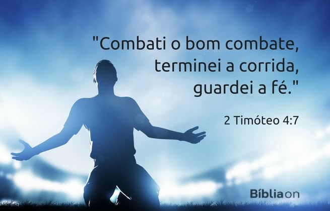

R&F ELETRÔNICA
ELETRÔNICA E INFORMÁTICA

Todos gostam de vencer. Mas para vencer é preciso lutar.
As lutas da vida nem sempre são fáceis de vencer
mas a Bíblia nos mostra como podemos sair vitoriosos.
Com a ajuda de Jesus, podemos chegar ao fim da vida e dizer com Paulo:
Combati o bom combate, terminei a corrida, guardei a fé. 2 Timóteo 4:7
O prêmio do bom combate
A vida é como um combate ou uma corrida: para vencer é preciso esforço e dedicação.
Não podemos desistir! Por vezes chega o cansaço, o desânimo e parece que a luta nunca vai acabar.
Mas não lutamos em vão. Há um prêmio que nos espera no fim da corrida.
O grande prêmio é a vida eterna com Jesus, sem mais dor nem sofrimento.
Em meio à luta, precisamos lembrar que nosso alvo vale a pena!
A glória do Céu é muito maior que o sofrimento atual.
O combate pode ser duro, a corrida pode ser uma maratona mas, no fim, a recompensa será maravilhosa!
O segredo para vencer o combate
A Bíblia nos dá a chave para combater o bom combate e sair vitorioso a fé.
Um pouco de fé em Jesus pode até mover montanhas!
Fé é confiar em Jesus, crendo que ele está no controle e já venceu.
A vitória não vem de nossa própria força.
Nós somos fracos mas Deus é forte! Ele nos dá a vitória.
Quando tentamos fazer tudo sozinhos, fracassamos.
Mas quando confiamos no poder de Deus e procuramos obedecer a ele, Deus nos ajuda.
Assim como Jesus foi vitorioso até sobre a morte,
todos que creem em Jesus e não desistem já têm a vitória garantida.
Nós podemos combater o bom combate porque Jesus já venceu a batalha.
A vitória dele é nossa vitória!
Tenha fé e não desista de combater o bom combate e você sairá vencedor!
R&F ELETRÔNICA